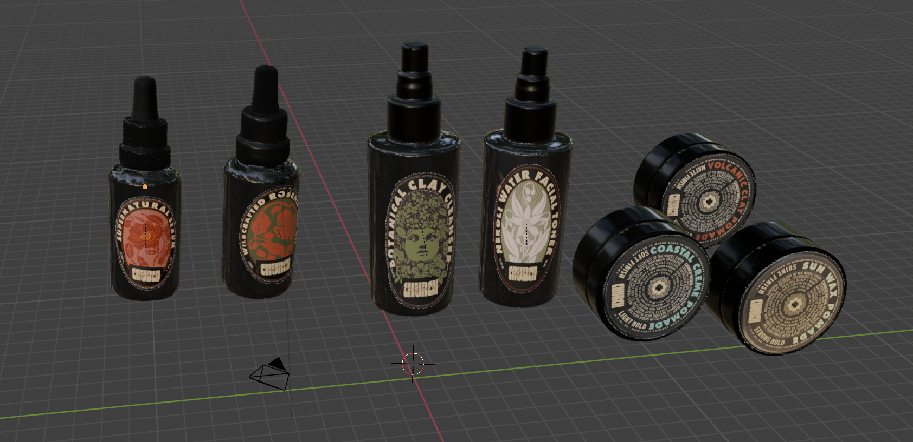

All the video for this campaign piece was taken in
the Marin Headlands, establishing a direct visual
connection between Church products and their natural
origins. The landscape footage
with refined product shots creates a narrative that
reinforces our commitment to botanical ingredients.
I developed custom logo animations in After Effects,
employing organic motion curves that mirror the
fluidity of natural elements while maintaining
brand sophistication.
Pomade Campaign
+
Customer Testimonial Animation
* click through the videos to see the full campaign
Software: After Effects
Platforms: Instagram, Google Ads, YouTube
As my inaugural project for Church California,
this testimonial-driven advertisement leverages
authentic customer reviews to build trust and
credibility. The kinetic typography treatment
emphasizes key product benefits while maintaining
readability across multiple viewing contexts.
Strategic pacing and hierarchical animation
create moments of emphasis that align with
conversion-focused messaging.
Branding Videos
+
Barbershop Documentary Series
Software: After Effects, Premiere Pro
Concept: Product authenticity narrative
This brand film showcases the symbiotic
relationship between Church California products
and the barbershop where they're conceived and
tested. Through dynamic zoom transitions created
in After Effects, the piece weaves together the
dual narratives of craftsmanship and commerce.
The documentary approach legitimizes our
"made by barbers, for everyone" positioning
while highlighting the rigorous product
development process that occurs within
the shop's walls.

+
3D Product Modeling
Software: Blender, After Effects
Technique: Photorealistic rendering
I developed a comprehensive library of
photorealistic 3D models for the entire Church
California product line using Blender. These
digital assets enable dynamic motion graphics
that would be impossible with traditional
product photography.
By integrating these models into Instagram
advertisements and motion campaigns, I've
created a distinctive visual language that
sets our content apart in crowded social feeds.
The flexibility of 3D assets allows for rapid
iteration and seasonal campaign variations
without additional photography costs.
Botanical Barbershop
+
YouTube Feature Documentary
Collaboration: Church photographer
Duration: 3:45
This extended brand film represents a
collaborative effort with Church's lead
photographer to capture the essence of our
botanical barbershop concept. I handled all
post-production, crafting a narrative that
interweaves product showcases with authentic
barbershop culture.
The piece strategically highlights our retail
merchandise and professional product line while
maintaining documentary authenticity. Through
careful pacing and color grading, the film
positions Church California as more than a
product line—it's a lifestyle rooted in
craftsmanship and natural ingredients.